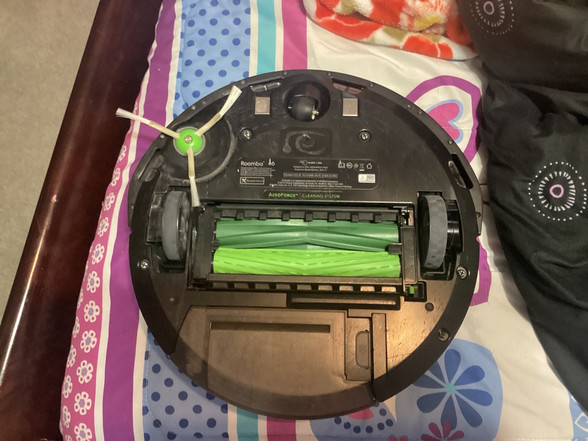

Guía documentada · 16 septiembre 2026
Cómo limpiar los sensores de un robot aspirador
Empieza por identificar el sensor y el modelo. Limpiar la carcasa, una ventana óptica o un contacto de carga no siempre requiere el mismo procedimiento.

Localiza el procedimiento correcto
Busca en el manual un dibujo de los sensores. Distingue los de desnivel de los de navegación y de los contactos eléctricos. Anota el mensaje de error antes de tocar nada: ayudará a comprobar después si el problema se ha resuelto.
Un ejemplo documentado: sensores de desnivel Roomba
La guía oficial iRobot: cómo limpiar los sensores de desnivel indica limpiar sus aberturas con un paño de microfibra o algodón suave, limpio y seco. La página incluye Roomba Essential y otras series, pero esta instrucción no debe extrapolarse a cámaras, sensores láser ni contactos eléctricos.
Secuencia de trabajo
- Detén la tarea y aplica el apagado indicado en el manual antes de manipular el equipo.
- Colócalo sobre una superficie estable siguiendo las instrucciones de manejo.
- Localiza la ventana del sensor que corresponde al aviso.
- Utiliza el material y método especificados, sin desmontar piezas no previstas para el usuario.
- Revisa que no queden pelusas u obstáculos y vuelve a colocarlo correctamente.
- Haz una prueba supervisada en suelo plano y seguro, lejos de bordes.
Qué evitar
No tapes un sensor para que el robot ignore una alfombra o un borde. No introduzcas objetos en ranuras ni apliques líquidos o limpiadores sin autorización del manual. Si ves una ventana rota o una pieza suelta, no intentes compensarlo cambiando parámetros en la aplicación.
Si el aviso continúa
Registra el código exacto, la zona donde ocurre, el estado del suelo y el procedimiento realizado. Esos datos son más útiles para soporte que una descripción genérica como «no funciona». No atribuyas automáticamente todos los fallos de navegación a suciedad: puede hacer falta un diagnóstico distinto.
Consulta también la guía de mapas si el problema es la representación de habitaciones, en lugar de un aviso de sensor.
Fuentes y alcance
Documentación consultada el 16 de septiembre de 2026. Las instrucciones específicas se atribuyen al modelo correspondiente; las listas y ejemplos de decisión son elaboración editorial.